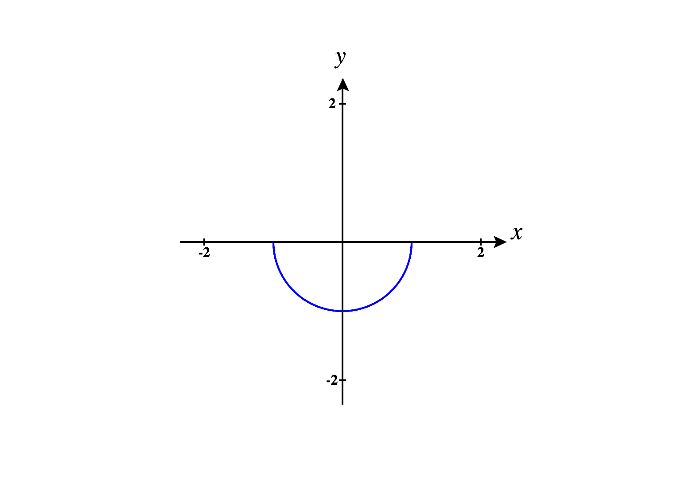
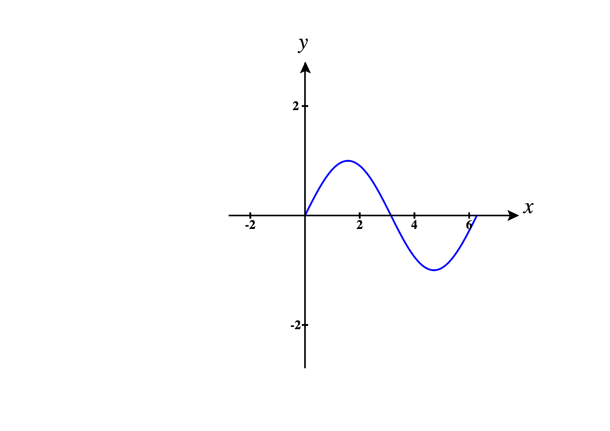

Online Problems
Several parametrized curves are graphed below, and the arrow indicates the
direction in which the parameter increases. Which is the graph of the path , for ?
Several parametrized curves are graphed below, and the arrow indicates the
direction in which the parameter increases. Which is the graph of the path , for ?
Consider the curve below.

Which of the following are parametrizations for the curve? Select all that apply.
, for , for , for , for , for , for for for for
Consider the curve below.

Which of the following are parametrizations for the curve? Select all that apply.
for for for for for for for
Consider the path , for .
Compute the velocity of . Compute the speed of . Compute the acceleration of .
Two ants are running on the top of a table. Their paths are described by and with
coordinates in inches, for in seconds.
At what time do the ants collide?
Where do the ants collide?
Consider the curve for .
Compute the velocity.
Compute the speed. Compute the acceleration.
Consider the curve for .
Find the velocity. Find the velocity when . Find a parametrization for the tangent
line to at the point where , so that .
Consider the curve for .
Find the velocity. Find the velocity when . Find a parametrization for the tangent
line to at the point where , so that .
Consider the curve for .
Find the velocity. Find the velocity when . Find a parametrization for the tangent
line to at the point where , so that .
Written Problems
-
(a)
- Graph the surface and the curve for .
-
(b)
- Verify algebraically that the curve lies on the surface.
Prove the following product rule for cross products.
Let and be paths in , then for such that and exist.
Professional Problem
-
(a)
- Let be a curve lying on a sphere in of radius . Prove that and are
perpendicular.
-
(b)
- For the curve , verify computationally that lies on the sphere, and that
is perpendicular to .